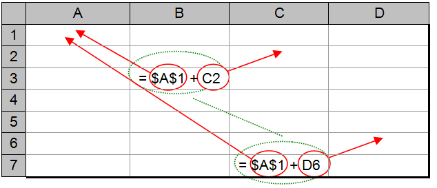
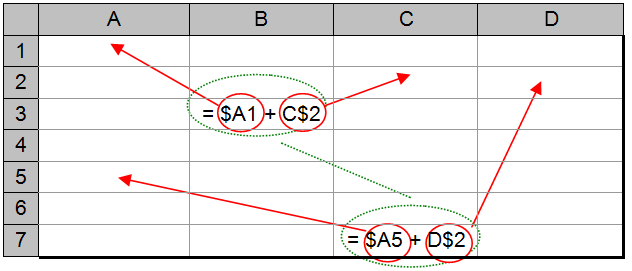

A feature that adds to the flexibility of spreadsheets is their ability to move or copy the contents of cells from one location in a table to another. This feature is best explained by reference to an example.
(c) reproduces the spreadsheet for converting temperatures from Celsius to Fahrenheit that was first introduced in . Part (a) of the figure shows the actual contents of the cells, while part (b) shows the values that would be displayed. Notice that the only cells that are being used in this table are B2, B3, C2, and C3. When referring to a rectangular collection of cells, called a block of cells, normally only the upper left hand cell and the lower right hand cell are listed. So, in this case, the cells of interest are in the block B2-C3. Parts (c) and (d) of show the cell contents and displayed values that would result from “moving” block B2-C3 to block A1-B2.
Comparing part (b) of the figure to part (d), we can see that the “move” operation does exactly what we would expect it to do. It moves the spreadsheet for temperature conversions to a different portion of the table. However, a careful comparison of parts (a) and (c) will reveal that “move” involves more than at first meets the eye. When the formula = (9/5) * B2 + 32 stored in cell B3 was moved to cell A2, it was modified to read = (9/5) * A1 + 32. While this change might at first seem perplexing, it is necessary in order to allow the temperature conversion spreadsheet to work properly at its new location in the table. If the formula had not been modified, it would be in error after the move, since cell B2 no longer holds the temperature to be converted.
(a) Cell contents before move
(b) Displayed values before move
(c) Cell contents after move
(d) Displayed values after move
An overview of the effect of the “move” operation

An illustration of relative cell referencing
When performing a move or copy operation, numbers and text strings are copied to their new location without change. However, when moving or copying a formula, a technique known as relative cell referencing is usually used. Relative cell referencing treats the references to cells in a formula as being relative to the current location of that formula. For example, if a formula located in cell A2 makes reference to cell A1, that reference is interpreted to mean the cell immediately above the current cell. It is this relative location that is preserved in a move or copy operation. If the formula were moved to location B3 then the cell reference would be changed to B2, so that after the move the formula still refers to the cell immediately above it.
This concept of relative cell referencing is further illustrated in , which shows how a formula that is located in cell B3 would be modified if copied to C7. In its original location, the formula appears as = A1 + C2. Since cell A1 is located two cells up and one cell to the left of cell B3, when the formula is moved or copied to C7 this reference is changed to B5. Note that B5 is exactly two cells up and one cell to the left of C7. Likewise, the reference to cell C2 in the original formula, which is one cell up and one cell to the right of B3, will be changed to D6 when the formula is moved to C7 since D6 is one cell up and one cell to the right of C7.
As we have seen, relative referencing gives us the flexibility to freely move a spreadsheet to any location in the table. Most of the time, relative cell referencing is what we want. However, there are occasions when it is useful to be able to “lock” a cell reference in a formula to a particular location. This is called absolute cell referencing. In absolute cell referencing, even if the formula is moved, the referenced cell will not change.
Absolute cell referencing comes in most handy when there are one or more values that will be referenced in many different formulas. For example, say you were constructing a financial spreadsheet that dealt with employee salaries. It is likely that the current federal, state, and local income tax rates would be used in many calculations throughout the entire spreadsheet. Placing these rates in fixed cells and having all formulas that use these rates refer absolutely to those cells would be a very good idea. This is because tax rates inevitably change over time. When a tax rate increases, the only change that will have to be made to the spreadsheet will be to insert the new rate in the appropriate cell.
An illustration of absolute verses relative cell referencing
If you had instead chosen to treat the tax rates as constants and embed them directly in the underlying formulas, then whenever a rate changed you would have to find and change every formula in the spreadsheet that used that rate.
Constructing formulas that refer to the tax rates using relative cell referencing would be better than using constants, but still not as good as absolute referencing. The reason for this is that many formulas are likely to use the tax rate information. If you used relative referencing, then you would not have the flexibility to move the formulas around in the table. Every time you tried to move a formula that referred to a tax rate, relative referencing would corrupt your formula.
One common way of indicating that cell references are to be absolute is to place a dollar sign symbol in front of both the column and row designators. For example, if we wanted the reference to cell A1 to be absolute instead of relative, we would write $A$1. illustrates the effect of moving a formula that contains both absolute and relative references. The original formula, located in cell B3, contains an absolute reference to cell A1 and a relative reference to cell C2. After a move to cell C7, the absolute reference to cell A1 remains unchanged, while the relative reference is modified to point to D6.
One final point about cell referencing. As you know, a cell reference consists of two parts: the column reference and the row reference. It is possible to refer to one of these absolutely and the other relatively. For example, $A1 “locks” the column reference but allows the row reference to remain relative. C$2 works in the opposite manner, allowing the column reference to be relative while forcing the row to remain fixed.
illustrates the effect of “mixed” cell references. As in the previous two figures, the formula originally located in cell B3, refers to cell A1 and C2, and is moved to cell C7. The reference to A1 is $A1, which locks the column to “A”, but allows the row reference to remain relative. Since row 1 is two rows above row 3, when the formula is moved to row 7 the referenced cell will be on row 5 (two rows above row 7). Hence the complete reference will be $A5. The reference C$2 is handled in a similar manner, except the row is locked to 2, while the column is relative (one column to the right of the current cell).
An illustration of “mixed” cell referencing
In the preceding discussion, the terms “move” and “copy” were used somewhat interchangeably. This is because both operations handle cell contents in the same way. The only difference between the two is that “move” erases the contents of the source cells after performing a copy operation. Hence, after a “copy” there will be two instances of cell contents: the original (source) contents, and the copied (destination) contents. After a “move” there will be only one instance of the cell contents, in the destination location.
Exercises for
-
Given the following formula located in cell C5, show the modified formula that would result from a move to cell E9.
= 2 * B6 – F8
-
Given the following formula located in cell A1, show the modified formula that would result from a move to cell D2.
= ( C1 + C2 + C3 ) / D9
-
Given the following formula located in cell D5, show the modified formula that would result from a move to cell F7.
= $B$5 + $C$5
-
Given the following formula located in cell D5, show the modified formula that would result from a move to cell F7.
= $B5 + C$5
-
Given the following formula located in cell D5, show the modified formula that would result from a move to cell F7.
= B$5 + $C5